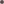

Możliwe powikłania:
Obrzęk, zaczerwienienie,
Ból w miejscu podania - objawy te znikają w przeciągu 72 godzin
Świąd
Nadwrażliwość w miejscu korekcji
Sporadycznie obrzęk pod postacią zgrubienia utrzymującego się kilka tygodni
Przeciwskazania:
Ciąża, karmienie piersią
Choroby o podłożu autoimmunologicznym
Skłonność do powstawania blizn przerostowych
Stany zapalne skóry (opryszczka, trądzik)
Nadwrażliwość na kwas hialuronowy
Choroby Nowotworowe
Zalecenia po zabiegu:
Unikać basenu, sauny i solarium
Unikać wysiłku fizycznego
Pierwszą noc po zabiegu zalecane jest spanie na plecach.